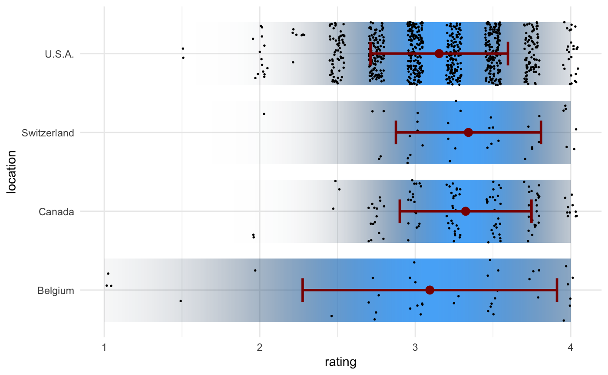
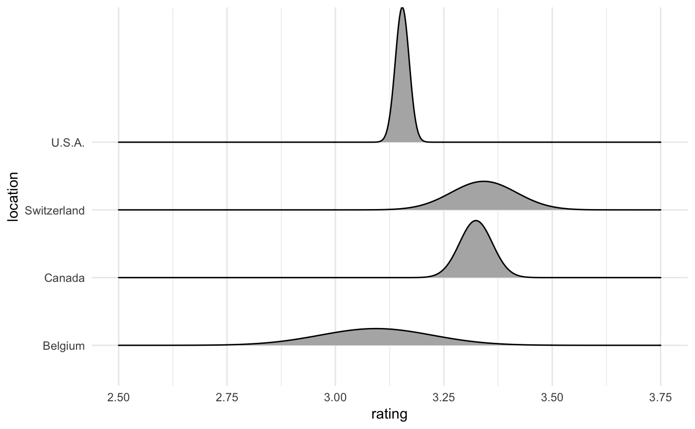

R/stat-confidence-density.R
stat_confidence_density.RdThis stat generates normal densities from provided estimates plus margins of error (at a specified confidence level). It can be used to estimate the confidence density that underlies a given parameter estimate with given margin of error.
stat_confidence_density(mapping = NULL, data = NULL, geom = "tile", position = "identity", ..., confidence = 0.95, xlim = NULL, n = 501, na.rm = FALSE, show.legend = FALSE, inherit.aes = TRUE)
| mapping | Set of aesthetic mappings created by |
|---|---|
| data | The data to be displayed in this layer. There are three options: If A A |
| geom | The geometric object to use display the data |
| position | Position adjustment, either as a string, or the result of a call to a position adjustment function. |
| ... | Other arguments passed on to |
| confidence | The confidence level used to calculate the |
| xlim | Numeric vector of two numbers setting the range of x values to be covered by the confidence density. If not supplied, is taken from the x scale. |
| n | Number of equally spaced points at which the density is calculated. |
| na.rm | If |
| show.legend | logical. Should this layer be included in the legends?
|
| inherit.aes | If |
Adrian W. Bowman. Graphs for Uncertainty. J. R. Statist. Soc. A 182:1-16, 2018. http://www.rss.org.uk/Images/PDF/events/2018/Bowman-5-Sept-2018.pdf
The following aesthetics are understood by this stat (required aesthetics are in bold):
x: The estimate whose uncertainty is to be displayed
moe: Margin of error
confidence: Confidence level used to calculate the moe statistic.
This defaults to 0.95 (moe corresponds to 95% confidence interval).
library(ggplot2) library(dplyr) cacao_small <- cacao %>% filter(location %in% c("Switzerland", "Canada", "U.S.A.", "Belgium")) cacao_summary <- cacao_small %>% group_by(location) %>% summarize( sd = sd(rating), moe = sd*1.96, rating = mean(rating) ) ggplot(cacao_summary, aes(x = rating, y = location)) + stat_confidence_density(aes(moe = moe, fill = stat(ndensity)), height = 0.8) + geom_point(data = cacao_small, position = position_jitter(width = 0.05), size = 0.3) + geom_errorbarh( aes(xmin = rating - sd, xmax = rating + sd), height = 0.3, color = "darkred", size = 1 ) + geom_point(size = 3, color = "darkred") + theme_minimal()library(ggridges)#> #>#> #> #>cacao_se <- cacao_small %>% group_by(location) %>% summarize( se = sd(rating)/sqrt(n()), moe = se*1.96, rating = mean(rating) ) ggplot(cacao_se, aes(x = rating, y = location)) + stat_confidence_density( geom = "ridgeline", aes(moe = moe, height = stat(density)), alpha = NA, xlim = c(2.5, 3.75), scale = 0.08 ) + theme_minimal()